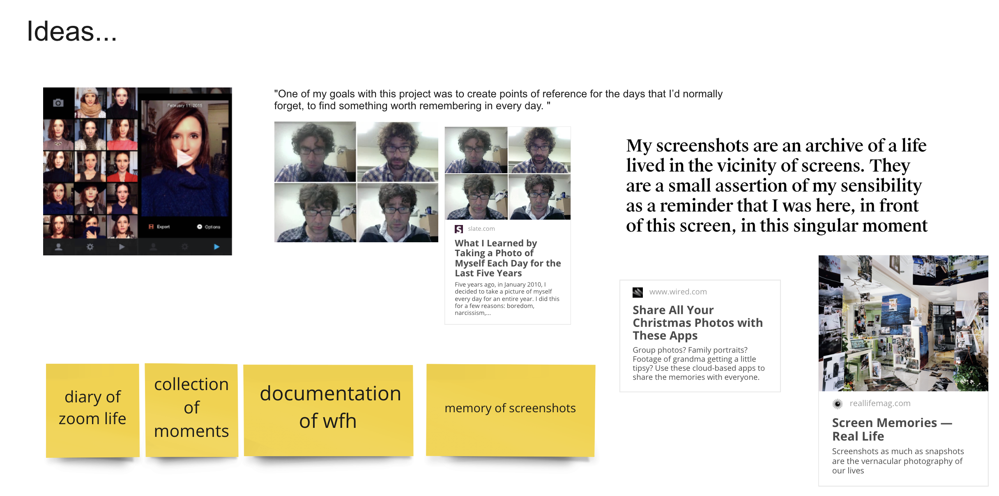
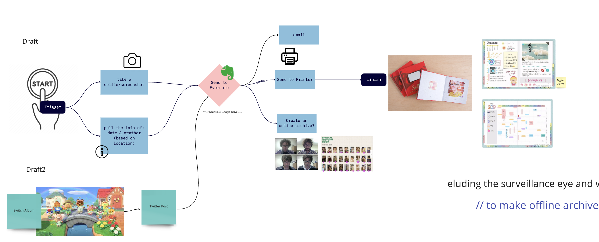
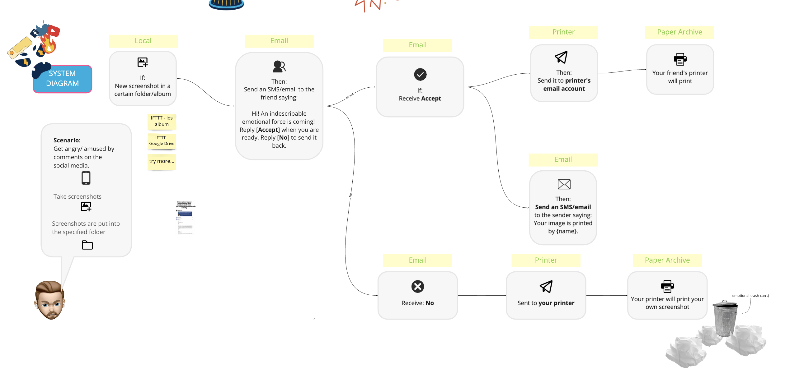
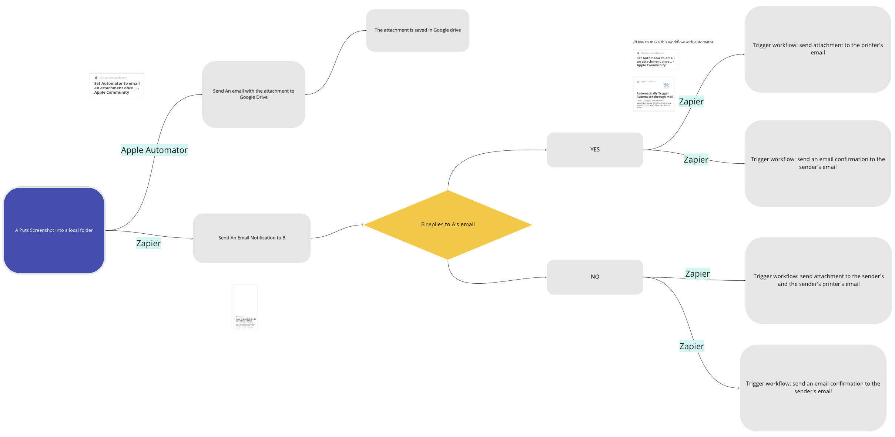
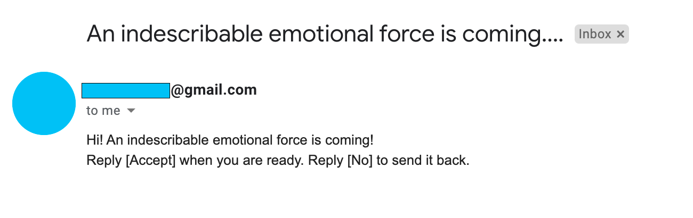
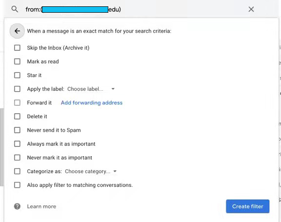
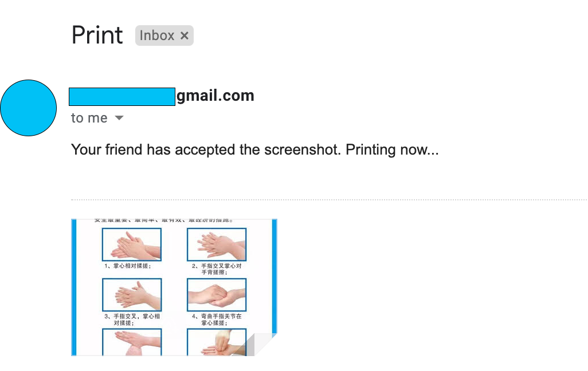

A Rube Goldberg machine
Documentation for a Rube Goldberg machine experiment
Project description
Authorized Emotion shooter is an application based on emails and services provided by Zapier. It entitles people to refuse or accept sharing information from others. As a result, the receiver could print this sudden information as a hard copy of memory through the connected printer or send it back to print a protest statement on the sender’s printer.
Creative Tech 3 - Emotion Shooter from Yue Cao on Vimeo.
Idea development
At first, we wanted to develop a Rube Goldberg machine that contains local storage, internet service, and hardware.A physical button could be a good start, but then we realized we should go through several technical difficulties to achieve this function.
We started to think about the existing applets on IFTTT, but unfortunately, the free version could only trigger a simple action without sending several different feedback. However, Zapier provided more opportunities for connections between various applications.
The next step was to make sure the output should be our printer.
After making decisions on essential steps, our group brainstormed together to create stories of how it would work to make it like a real functional machine. We decided on the ideas about “Screenshot as digital memories” and “Emotional Trash” as the primary direction.
After going through several technological problems, we achieved the effect we assumed.
Diagram iteration
Version1(with physical buttons)
Version2(with each steps)
Version3(add technical details)
Reference:Function Setup
Step1
New added screenshot in Google drive —> send email notification to the receiver
Step2
different emails to the connected printer
email filter function
Step3
Automatically add screenshots in local folders to google drive